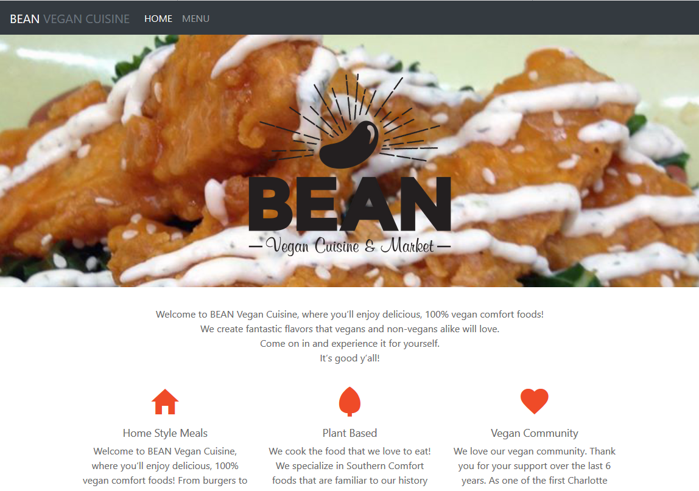
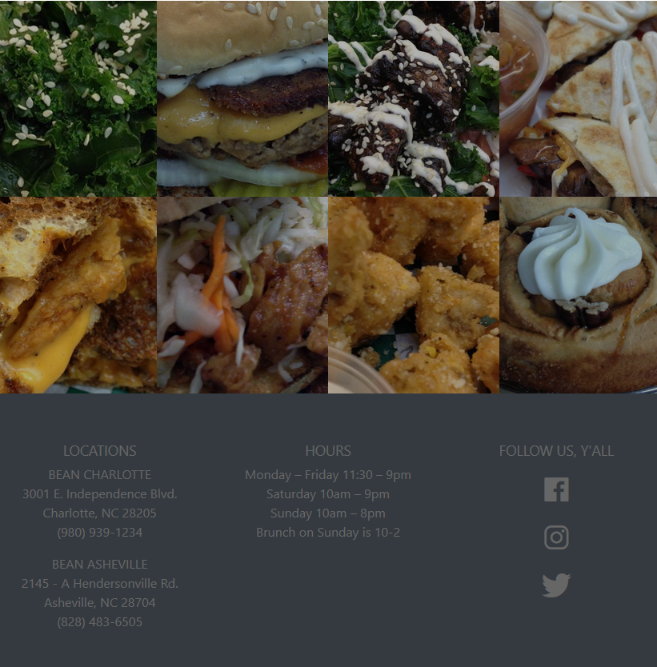
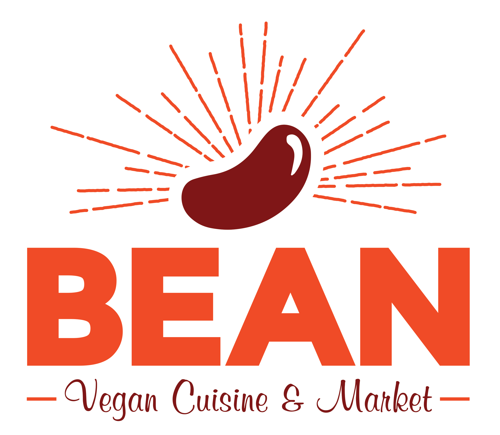
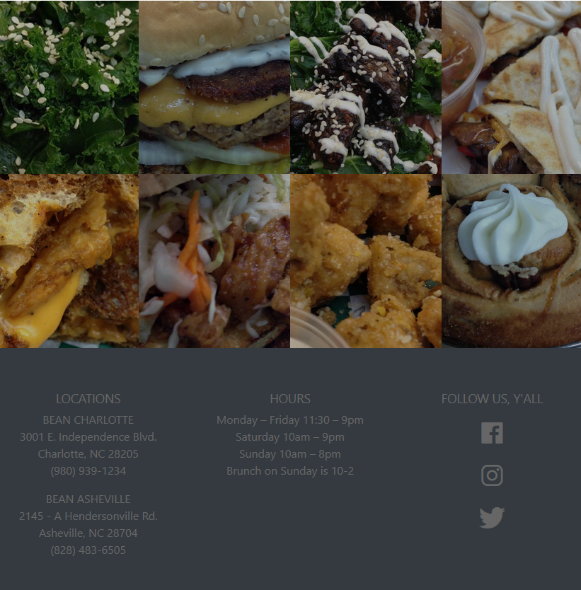
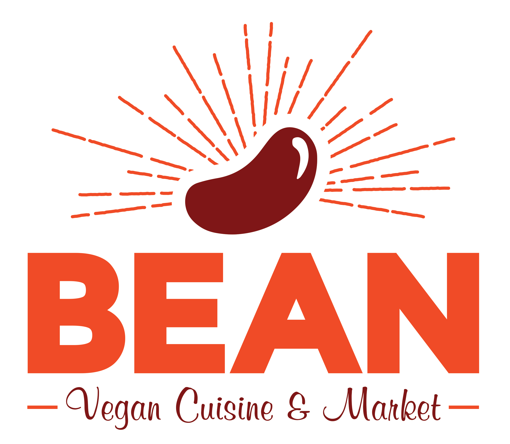

Bean
Logo redesign and website redesign
Bean Vegan Cuisine needed a fresh take on their homemade logo and outdated website. I went bright and hip, letting the food speak for itself.

Old logo
New logo
Logo redesign and website redesign
Bean Vegan Cuisine needed a fresh take on their homemade logo and outdated website. I went bright and hip, letting the food speak for itself.

Old logo
New logo
